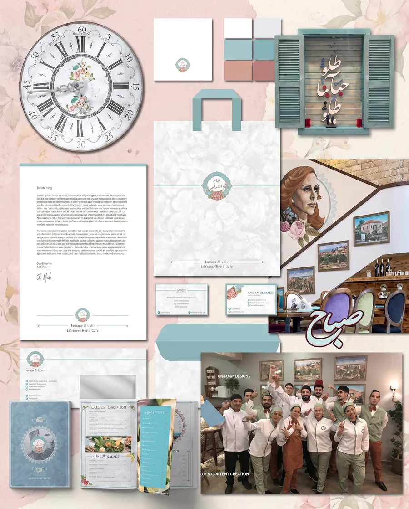
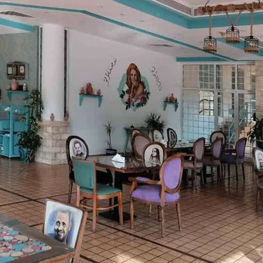
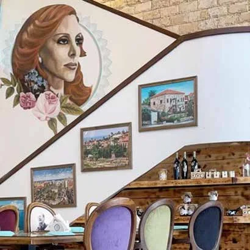
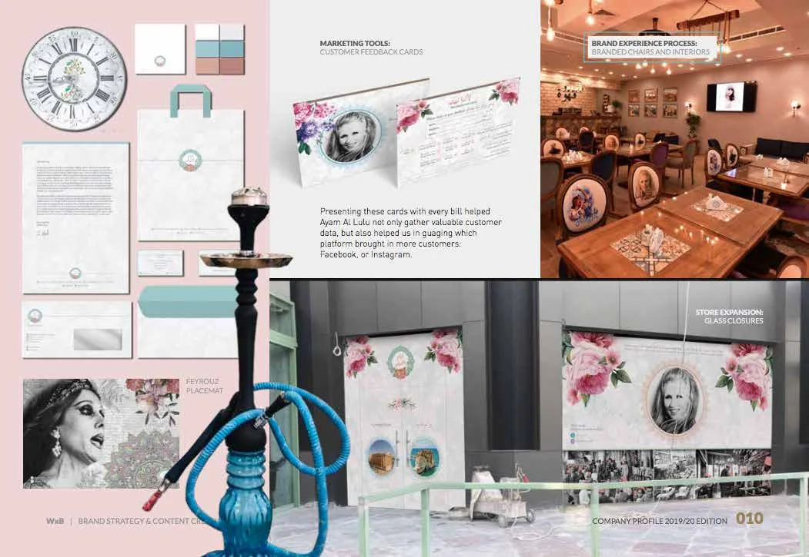
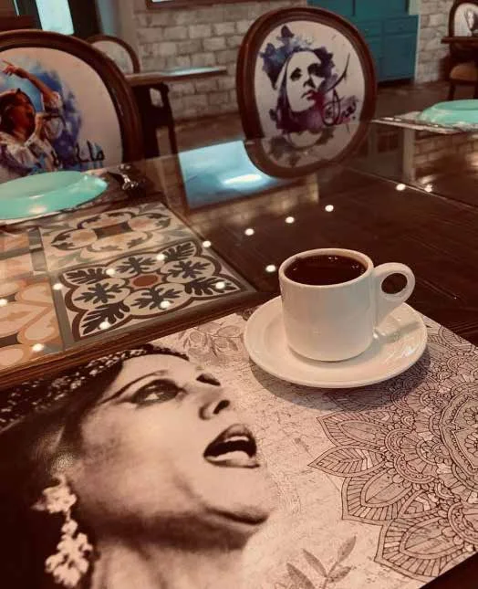
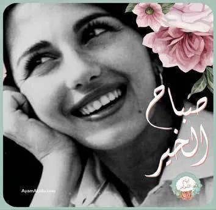
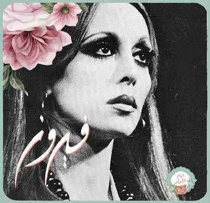
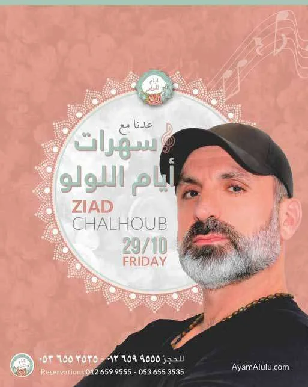
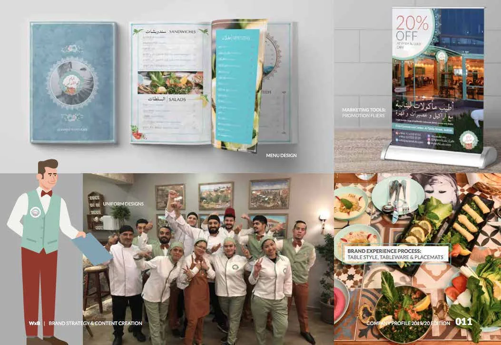
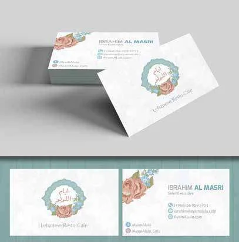

Case study 01 · Launch
Ayam Al Lulu. The golden days, booked solid.
80 seats, fully booked through opening week, before a single ad ran.

The problem
Two friends wanted to bring Lebanon’s golden days to the heart of Jeddah, and fill every seat from the first night.
The plan was a resto-café with classic Lebanese dishes, shisha, karaoke and live music in a historic yet modern room. There were plenty of ways to sell, from the menu and events to a line of Lebanese jarred goods. But the venue was new and had no audience yet, so a soft opening could easily have been a quiet one.
What I saw
The name was already the strategy.
Ayam Al Lulu means “the golden days” in Lebanese dialect. It is also the title of Sabah’s most famous song. The brand didn’t need to explain itself. It needed to bring an era back: its singers, its faces, its food, its evenings.
The decision
Everything would come from that era. Fayrouz, Sabah and Wadih El Safi would set the tone, alongside the tiles, florals and lettering of old Beirut. The cards, menus, chairs, placemats and posts would all look like they belonged there.
And we wouldn’t wait for opening night to find an audience. We started building the community three months before the doors opened, so that by the time they did, people were already asking when.
What I delivered
- Concept and brand strategy
- Logo illustration and logo grid
- Arabic and English typography, palette, patterns and floral overlays
- Menu design, stationery and uniforms
- Branded chairs, placemats and interior touchpoints
- Feedback cards that told us which platform brought each guest
- Glass closures for the expansion
- Website and social media
- Three-month pre-launch content campaigns
- Influencer and public-figure opening
- Events content: Thursday nights, karaoke, live music
What changed
- 80/80seats reserved through opening week
- 6,661profile visits in seven days, up from fewer than 100 a week
- 600+new followers in the first 24 hours
- 77story mentions on opening day
- 31review posts in opening week, mostly from influencers
- 68.5kimpressions in launch week
Even before opening, a single pre-launch post drew 94 organic likes and 21 genuine comments, with no ad spend. That came from engaging the accounts behind Jeddah’s local hashtags, every day.
Source: launch-week reservations and Instagram insights, as published in my 2020 case studies.
Since thenThe reservations didn’t stop after opening week. As of my 2023 portfolio, they were still filling through the same community-first approach.









Your story could be next.
Tell me what you’re building. I reply within two working days, and the first conversation is on me.